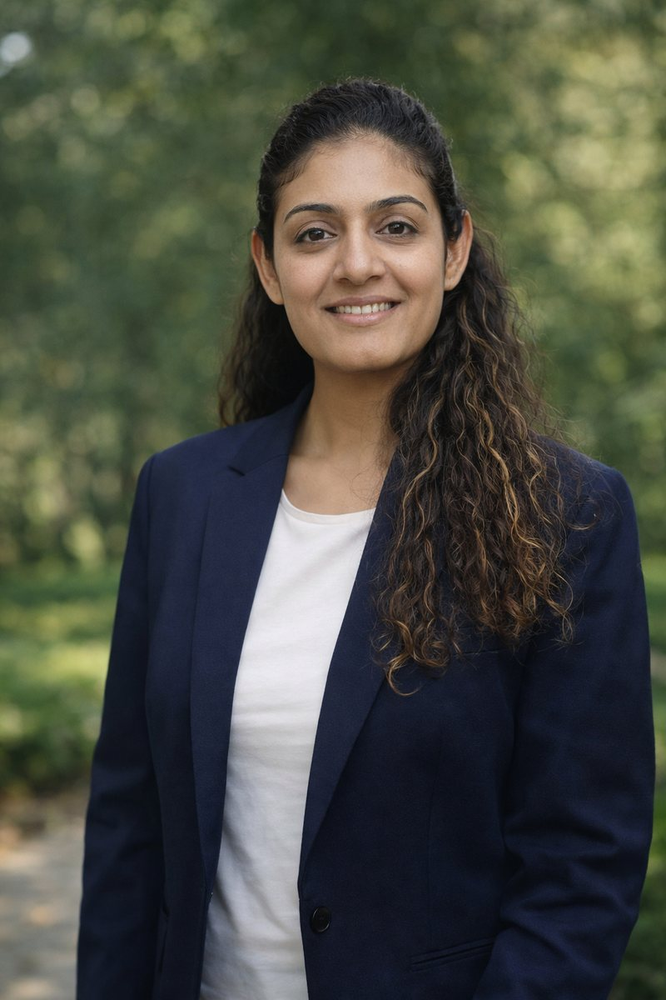

Hi, I'm Garima. A product designer who turns ambiguity into clarity by designing complex enterprise products that feel intuitive, human, and trustworthy.
Based in the San Francisco Bay Area, I was most recently a Staff Product Designer for a cloud-based monitoring platform at Fortinet, working closely with product, engineering, and cross-functional partners from discovery through launch.
I enjoy working in environments where complexity is high and clarity is critical — designing experiences, not just screens. I value clarity, consistency, and thoughtful defaults, and I believe good design earns trust over time.
I've worked within ambiguity and experienced the challenges of information silos, which has shaped a strong belief: meaningful design is never created in isolation. It emerges when teams work closely with users to deeply understand their challenges and solve real problems together.
I began my career as a QA engineer, which fundamentally shaped how I approach design. It gave me a deep appreciation for edge cases, technical constraints, and how products behave in real-world conditions. That foundation helps me stay grounded in execution while being an empathetic partner to product and engineering teams.
When I'm not designing, you'll likely find me with my family, building LEGO sets, exploring the outdoors, or cooking Indian food.
I'm open to senior and staff product design roles where the problems are genuinely complex and design has a real seat in shaping the product. If that sounds like your team, I'd love to talk.